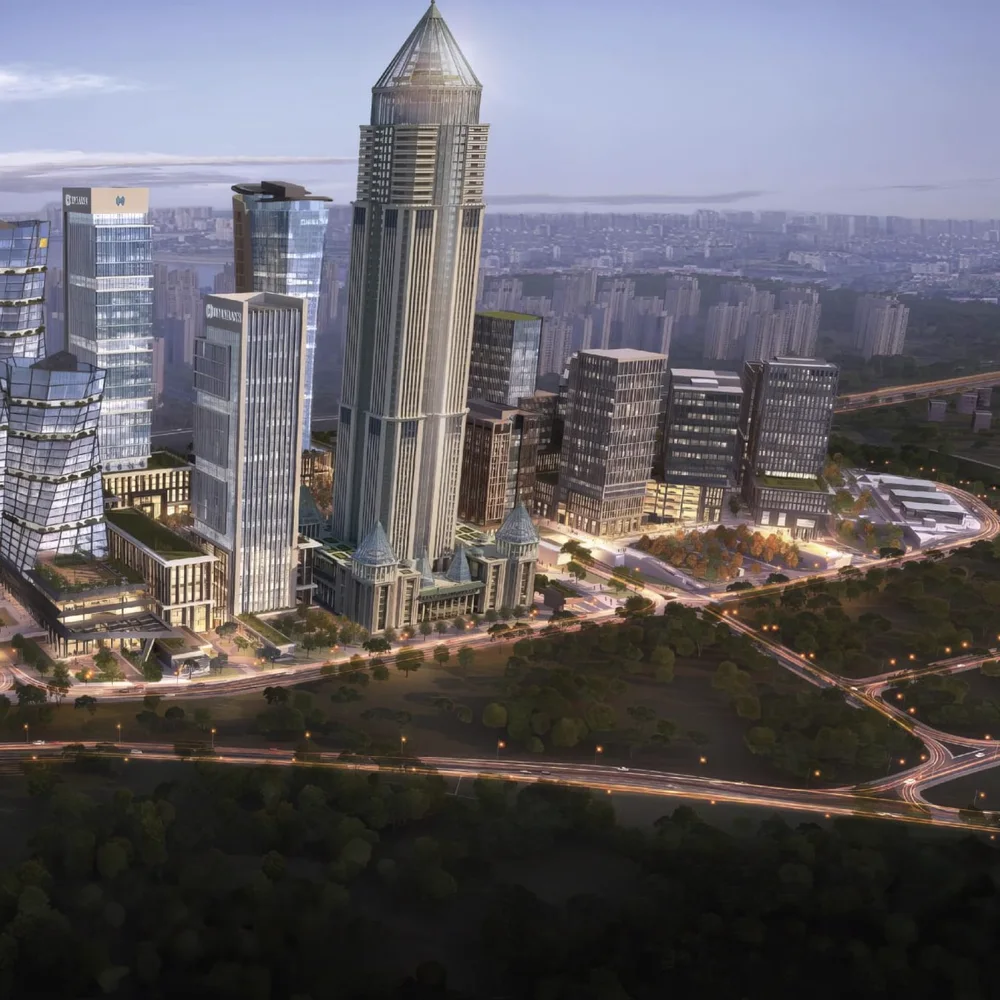

TAKVİM
Eylül 2026
- MoneyLIVE North America 202614–15 Eylül
- Money2020 Middle East 202614–16 Eylül
- European Blockchain Convention 1216–17 Eylül
- TEKNOFEST 202630 Eylül – 4 Ekim
Türkiye'de ve globalde düzenlenen fintek, finans ve teknoloji temalı etkinlikleri bu takvimde takip edebilirsiniz. Etkinliklerin güncel bilgileri, katılım şartları ve programları için kendi sitelerini kontrol etmeyi unutmayınız.

Takvimde yer almasını istediğiniz etkinlikleri aşağıdaki formu kullanarak iletebilirsiniz.
Fintek takviminde yer almasını istediğiniz etkinlikleri bizlere iletebilirsiniz.
Takvimdeki etkinlikler üç renkle ayrılır:
Bölge etiketleri:
Etkinliklerin güncel bilgileri, katılım şartları ve programları için kendi sitelerini kontrol etmeyi unutmayınız.
Fintech Zone olarak finansal teknolojiler ekosistemine katkı sağlamak için çalışmaya devam ediyoruz. Tarihler haber tarihleridir.
İlk etkinlikte Ziraat Teknoloji Genel Müdürü Sayın Bayram Tuzcu ile finansal teknolojilerdeki güncel gelişmeleri değerlendirdik.
Webinar serisiKurum içi inovasyon ile girişim çevikliğinin doğru zeminde nasıl buluşturulabileceğini ele aldık.
Haberi okuyunNijerya'nın farklı eyaletlerinden gelen geniş bir heyeti İstanbul Finans Merkezi'nde ağırladık.
Startupfon iş birliğiyle düzenlenen TechInvestor Academy, 22 Temmuz'da online olarak gerçekleştirildi.
ASELSAN Bağımsız Yönetim Kurulu Üyeleri Ebru Tümer ve İsmail Anı, Fintech Zone'un yönetim ofisine nezaket ziyaretinde bulundu.
Fintech Gate İstanbul Destek Programı'nın lansmanını İstanbul Finans Merkezi ev sahipliğinde gerçekleştirdik.
Tüm haberlerBaşvuru sürecinde yanınızdayız: alanında uzman ekibimiz ön başvuru aşamasından itibaren ihtiyaç duyduğunuz her durumda gerekli desteği sağlamaktadırlar.